Guild Swordsman
Approved identity
Normal · Adventurer Guild · candidate 03 · 50 × 58 occupied pixels · 10 generations
Short sword and visible backpack

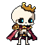
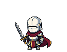
Native 112 × 88 PNG · Editable LibreSprite source · PixelLab original
Open the current Guild Bulwark review.
This board records the first-round choices.
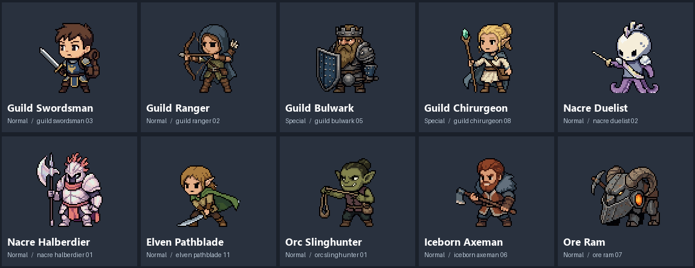
Approved identity
Normal · Adventurer Guild · candidate 03 · 50 × 58 occupied pixels · 10 generations
Short sword and visible backpack


Native 112 × 88 PNG · Editable LibreSprite source · PixelLab original
Revision requested
Normal · Adventurer Guild · candidate 02 · 51 × 57 occupied pixels · 10 generations
Drawn recurved bow and weathered hood
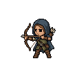
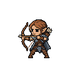
Native 112 × 88 PNG · Editable LibreSprite source · PixelLab original
Revision requested
Special · Adventurer Guild · candidate 05 · 52 × 57 occupied pixels · 10 generations
Broad shield and open face
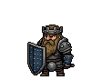
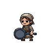
Native 112 × 88 PNG · Editable LibreSprite source · PixelLab original
Approved identity
Special · Adventurer Guild · candidate 08 · 43 × 58 occupied pixels · 10 generations
Pointed ears, satchel and green-tipped staff

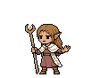
Native 112 × 88 PNG · Editable LibreSprite source · PixelLab original
Revision requested
Normal · Nacre Court · candidate 02 · 56 × 60 occupied pixels · 10 generations
Shell rapier and pearl crest
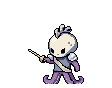
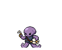
Native 112 × 88 PNG · Editable LibreSprite source · PixelLab original
Approved identity
Normal · Nacre Court · candidate 01 · 55 × 62 occupied pixels · 10 generations
Shell plate and tall coral-edged polearm
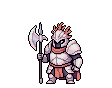
Native 112 × 88 PNG · Editable LibreSprite source · PixelLab original
Approved identity
Normal · Forest elves · candidate 11 · 53 × 51 occupied pixels · 10 generations
Leaf cloak and low curved blade

Native 112 × 88 PNG · Editable LibreSprite source · PixelLab original
Revision requested
Normal · Forest orcs · candidate 01 · 47 × 57 occupied pixels · 10 generations
Looped sling and stitched vest
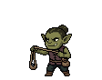
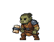
Native 112 × 88 PNG · Editable LibreSprite source · PixelLab original
Approved identity
Normal · Frostwake mountain clan · candidate 06 · 50 × 57 occupied pixels · 10 generations
Two-handed axe and fur shoulders

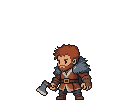
Native 112 × 88 PNG · Editable LibreSprite source · PixelLab original
Revision requested
Normal · Ironvein excavation crews · candidate 07 · 57 × 51 occupied pixels · 10 generations
Ram horns around a riveted iron nose

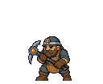
Native 112 × 88 PNG · Editable LibreSprite source · PixelLab original